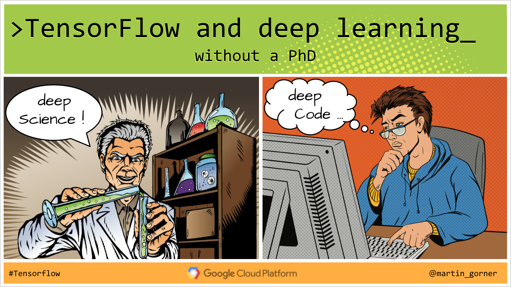
In this codelab, you will learn how to build and train a neural network that recognises handwritten digits. Along the way, as you enhance your neural network to achieve 99% accuracy, you will also discover the tools of the trade that deep learning professionals use to train their models efficiently.
This codelab uses the MNIST dataset, a collection of 60,000 labeled digits that has kept generations of PhDs busy for almost two decades. You will solve the problem with less than 100 lines of Python / TensorFlow code.
What you'll learn
- What is a neural network and how to train it
- How to build a basic 1-layer neural network using TensorFlow
- How to add more layers
- Training tips and tricks: overfitting, dropout, learning rate decay...
- How to troubleshoot deep neural networks
- How to build convolutional networks
What you'll need
- Python 2 or 3 (Python 3 recommended)
- TensorFlow
- Matplotlib (Python visualisation library)
Installation instructions are given in the next step of the lab.
Install the necessary software on your computer: Python, TensorFlow and Matplotlib. Full installation instructions are given here: INSTALL.txt
Clone the GitHub repository:
$ git clone https://github.com/martin-gorner/tensorflow-mnist-tutorial
or download the ZIP file here: (for offline codelab)
./docs/tensorflow-mnist-tutorial-master.zip
When you launch the initial python script, you should see a real-time visualisation of the training process:
$ python3 mnist_1.0_softmax.py
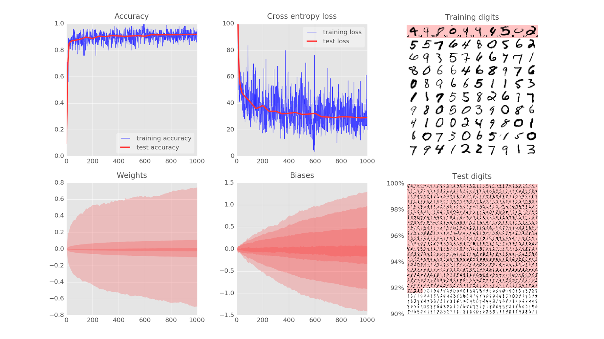
Troubleshooting: if you cannot get the real-time visualisation to run or if you prefer working with only the text output, you can de-activate the visualisation by commenting out one line and de-commenting another. See instructions at the bottom of the file.
We will first watch a neural network being trained. The code is explained in the next section so you do not have to look at it now.
Our neural network takes in handwritten digits and classifies them, i.e. states if it recognises them as a 0, a 1, a 2 and so on up to a 9. It does so based on internal variables ("weights" and "biases", explained later) that need to have a correct value for the classification to work well. This "correct value" is learned through a training process, also explained in detail later. What you need to know for now is that the training loop looks like this:
Training digits => updates to weights and biases => better recognition (loop)
Let us go through the six panels of the visualisation one by one to see what it takes to train a neural network.
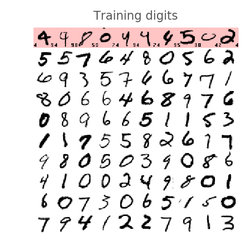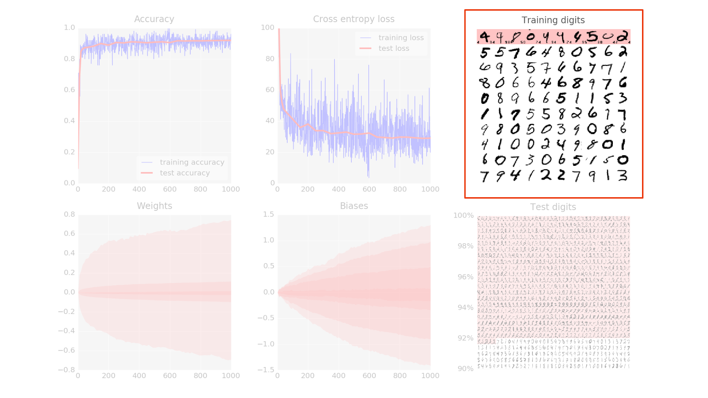
Here you see the training digits being fed into the training loop, 100 at a time. You also see if the neural network, in its current state of training, has recognized them (white background) or mis-classified them (red background with correct label in small print on the left side, bad computed label on the right of each digit).
 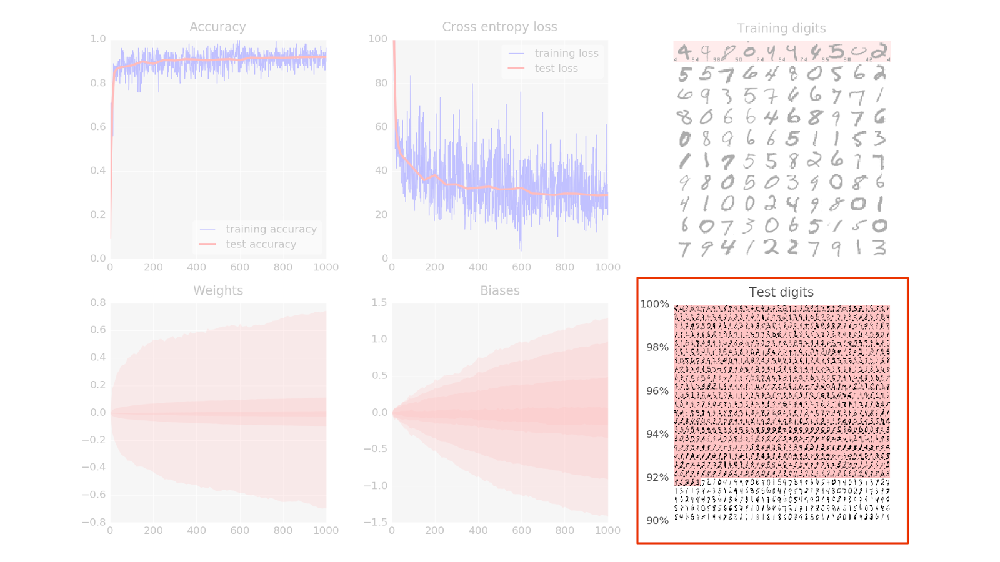
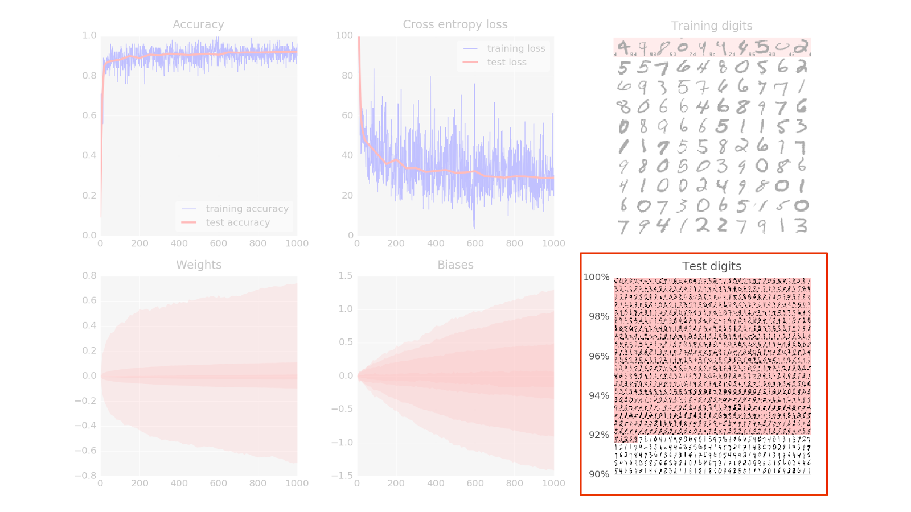
To test the quality of the recognition in real-world conditions, we must use digits that the system has NOT seen during training. Otherwise, it could learn all the training digits by heart and still fail at recognising an "8" that I just wrote. The MNIST dataset contains 10,000 test digits. Here you see about 1000 of them with all the mis-recognised ones sorted at the top (on a red background). The scale on the left gives you a rough idea of the accuracy of the classifier (% of correctly recognised test digits)
 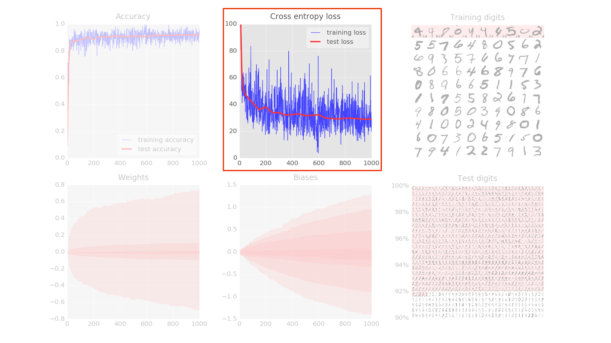
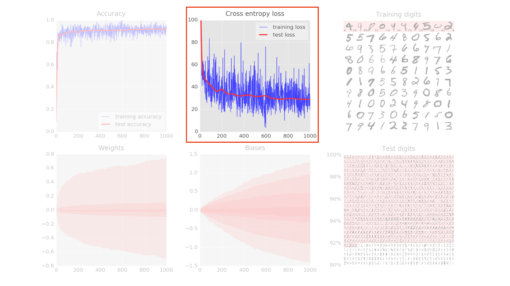
To drive the training, we will define a loss function, i.e. a value representing how badly the system recognises the digits and try to minimise it. The choice of a loss function (here, "cross-entropy") is explained later. What you see here is that the loss goes down on both the training and the test data as the training progresses: that is good. It means the neural network is learning. The X-axis represents iterations through the learning loop.
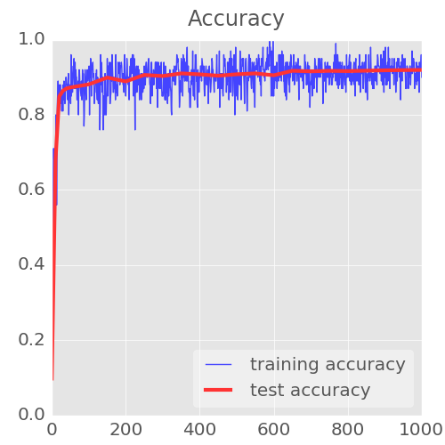
The accuracy is simply the % of correctly recognised digits. This is computed both on the training and the test set. You will see it go up if the training goes well.

 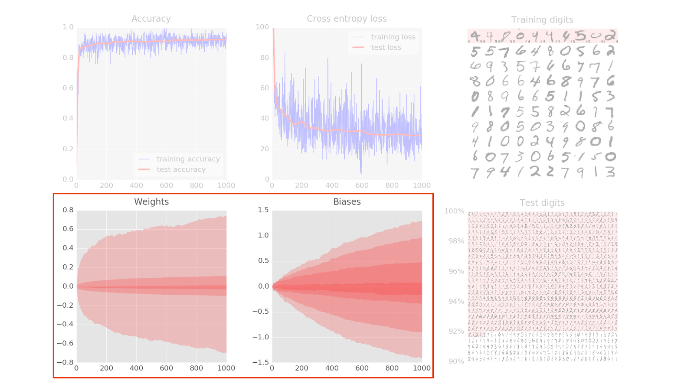
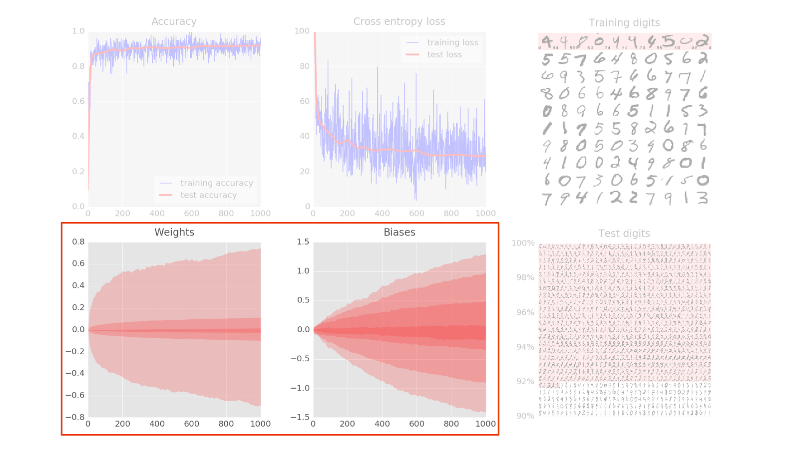
The final two graphs represent the spread of all the values taken by the internal variables, i.e. weights and biases as the training progresses. Here you see for example that biases started at 0 initially and ended up taking values spread roughly evenly between -1.5 and 1.5. These graphs can be useful if the system does not converge well. If you see weights and biases spreading into the 100s or 1000s, you might have a problem.
The bands in the graphs are percentiles. There are 7 bands so each band is where 100/7=14% of all the values are.
Keyboard shortcuts for the visualisation GUI:
1 ......... display 1st graph only
2 ......... display 2nd graph only
3 ......... display 3rd graph only
4 ......... display 4th graph only
5 ......... display 5th graph only
6 ......... display 6th graph only
7 ......... display graphs 1 and 2
8 ......... display graphs 4 and 5
9 ......... display graphs 3 and 6
ESC or 0 .. back to displaying all graphs
SPACE ..... pause/resume
O ......... box zoom mode (then use mouse)
H ......... reset all zooms
Ctrl-S .... save current image

Handwritten digits in the MNIST dataset are 28x28 pixel greyscale images. The simplest approach for classifying them is to use the 28x28=784 pixels as inputs for a 1-layer neural network.

Each "neuron" in a neural network does a weighted sum of all of its inputs, adds a constant called the "bias" and then feeds the result through some non-linear activation function.
Here we design a 1-layer neural network with 10 output neurons since we want to classify digits into 10 classes (0 to 9).
For a classification problem, an activation function that works well is softmax. Applying softmax on a vector is done by taking the exponential of each element and then normalising the vector (using any norm, for example the ordinary euclidean length of the vector).

We will now summarise the behaviour of this single layer of neurons into a simple formula using a matrix multiply. Let us do so directly for a "mini-batch" of 100 images as the input, producing 100 predictions (10-element vectors) as the output.

Using the first column of weights in the weights matrix W, we compute the weighted sum of all the pixels of the first image. This sum corresponds to the first neuron. Using the second column of weights, we do the same for the second neuron and so on until the 10th neuron. We can then repeat the operation for the remaining 99 images. If we call X the matrix containing our 100 images, all the weighted sums for our 10 neurons, computed on 100 images are simply X.W (matrix multiply).
Each neuron must now add its bias (a constant). Since we have 10 neurons, we have 10 bias constants. We will call this vector of 10 values b. It must be added to each line of the previously computed matrix. Using a bit of magic called "broadcasting" we will write this with a simple plus sign.
We finally apply the softmax activation function and obtain the formula describing a 1-layer neural network, applied to 100 images:

Now that our neural network produces predictions from input images, we need to measure how good they are, i.e. the distance between what the network tells us and what we know to be the truth. Remember that we have true labels for all the images in this dataset.
Any distance would work, the ordinary euclidian distance is fine but for classification problems one distance, called the "cross-entropy" is more efficient.

"Training" the neural network actually means using training images and labels to adjust weights and biases so as to minimise the cross-entropy loss function. Here is how it works.
The cross-entropy is a function of weights, biases, pixels of the training image and its known label.
If we compute the partial derivatives of the cross-entropy relatively to all the weights and all the biases we obtain a "gradient", computed for a given image, label and present value of weights and biases. Remember that we have 7850 weights and biases so computing the gradient sounds like a lot of work. Fortunately, TensorFlow will do it for us.
The mathematical property of a gradient is that it points "up". Since we want to go where the cross-entropy is low, we go in the opposite direction. We update weights and biases by a fraction of the gradient and do the same thing again using the next batch of training images. Hopefully, this gets us to the bottom of the pit where the cross-entropy is minimal.

In this picture, cross-entropy is represented as a function of 2 weights. In reality, there are many more. The gradient descent algorithm follows the path of steepest descent into a local minimum. The training images are changed at each iteration too so that we converge towards a local minimum that works for all images.
To sum it up, here is how the training loop looks like:
Training digits and labels => loss function => gradient (partial derivatives) => steepest descent => update weights and biases => repeat with next mini-batch of training images and labels
Frequently Asked Questions
The code for the 1-layer neural network is already written. Please open the mnist_1.0_softmax.py file and follow along with the explanations.
You should see there are only minor differences between the explanations and the starter code in the file. They correspond to functions used for the visualisation and are marked as such in comments. You can ignore them.
mnist_1.0_softmax.py
import tensorflow as tf
X = tf.placeholder(tf.float32, [None, 28, 28, 1])
W = tf.Variable(tf.zeros([784, 10]))
b = tf.Variable(tf.zeros([10]))
init = tf.initialize_all_variables()First we define TensorFlow variables and placeholders. Variables are all the parameters that you want the training algorithm to determine for you. In our case, our weights and biases.
Placeholders are parameters that will be filled with actual data during training, typically training images. The shape of the tensor holding the training images is [None, 28, 28, 1] which stands for:
- 28, 28, 1: our images are 28x28 pixels x 1 value per pixel (grayscale). The last number would be 3 for color images and is not really necessary here.
- None: this dimension will be the number of images in the mini-batch. It will be known at training time.
mnist_1.0_softmax.py
# model
Y = tf.nn.softmax(tf.matmul(tf.reshape(X, [-1, 784]), W) + b)
# placeholder for correct labels
Y_ = tf.placeholder(tf.float32, [None, 10])
# loss function
cross_entropy = -tf.reduce_sum(Y_ * tf.log(Y))
# % of correct answers found in batch
is_correct = tf.equal(tf.argmax(Y,1), tf.argmax(Y_,1))
accuracy = tf.reduce_mean(tf.cast(is_correct, tf.float32))The first line is the model for our 1-layer neural network. The formula is the one we established in the previous theory section. The tf.reshape command transforms our 28x28 images into single vectors of 784 pixels. The "-1" in the reshape command means "computer, figure it out, there is only one possibility". In practice it will be the number of images in a mini-batch.
We then need an additional placeholder for the training labels that will be provided alongside training images.
Now, we have model predictions and correct labels so we can compute the cross-entropy. tf.reduce_sum sums all the elements of a vector.
The last two lines compute the percentage of correctly recognised digits. They are left as an exercise for the reader to understand, using the TensorFlow API reference. You can also skip them.
mnist_1.0_softmax.py
optimizer = tf.train.GradientDescentOptimizer(0.003)
train_step = optimizer.minimize(cross_entropy)This where the TensorFlow magic happens. You select an optimiser (there are many available) and ask it to minimise the cross-entropy loss. In this step, TensorFlow computes the partial derivatives of the loss function relatively to all the weights and all the biases (the gradient). This is a formal derivation, not a numerical one which would be far too time-consuming.
The gradient is then used to update the weights and biases. 0.003 is the learning rate.
Finally, it is time to run the training loop. All the TensorFlow instructions up to this point have been preparing a computation graph in memory but nothing has been computed yet.
The computation requires actual data to be fed into the placeholders you have defined in your TensorFlow code. This is supplied in the form of a Python dictionary where the keys are the names of the placeholders.
mnist_1.0_softmax.py
sess = tf.Session()
sess.run(init)
for i in range(1000):
# load batch of images and correct answers
batch_X, batch_Y = mnist.train.next_batch(100)
train_data={X: batch_X, Y_: batch_Y}
# train
sess.run(train_step, feed_dict=train_data)The train_step that is executed here was obtained when we asked TensorFlow to minimise out cross-entropy. That is the step that computes the gradient and updates weights and biases.
Finally, we also need to compute a couple of values for display so that we can follow how our model is performing.
The accuracy and cross entropy are computed on training data using this code in the training loop (every 10 iterations for example):
# success ?
a,c = sess.run([accuracy, cross_entropy], feed_dict=train_data)The same can be computed on test data by supplying test instead of training data in the feed dictionary (do this every 100 iterations for example. There are 10,000 test digits so this takes some CPU time):
# success on test data ?
test_data={X: mnist.test.images, Y_: mnist.test.labels}
a,c = sess.run([accuracy, cross_entropy], feed=test_data)This simple model already recognises 92% of the digits. Not bad, but you will now improve this significantly.
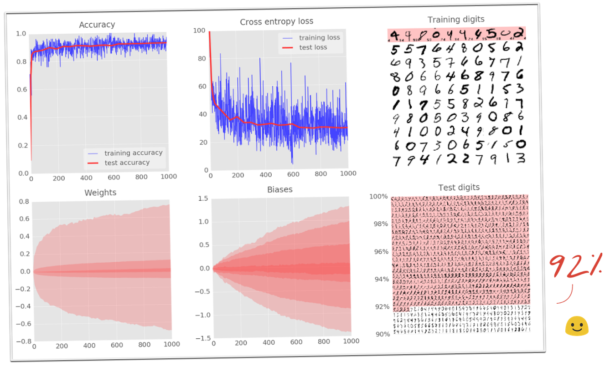

To improve the recognition accuracy we will add more layers to the neural network. The neurons in the second layer, instead of computing weighted sums of pixels will compute weighted sums of neuron outputs from the previous layer. Here is for example a 5-layer fully connected neural network:

We keep softmax as the activation function on the last layer because that is what works best for classification. On intermediate layers however we will use the the most classical activation function: the sigmoid:

To add a layer, you need an additional weights matrix and an additional bias vector for the intermediate layer:
W1 = tf.Variable(tf.truncated_normal([28*28, 200] ,stddev=0.1))
B1 = tf.Variable(tf.zeros([200]))
W2 = tf.Variable(tf.truncated_normal([200, 10], stddev=0.1))
B2 = tf.Variable(tf.zeros([10]))The shape of the weights matrix for a layer is [N, M] where N is the number of inputs and M of outputs for the layer. In the code above, we use 200 neurons in the intermediate layer and still 10 neurons in the last layer.
And now change your 1-layer model into a 2-layer model:
XX = tf.reshape(X, [-1, 28*28])
Y1 = tf.nn.sigmoid(tf.matmul(XX, W1) + B1)
Y = tf.nn.softmax(tf.matmul(Y1, W2) + B2)That's it. You should now be able to push your network above 97% accuracy with 2 intermediate layer with for example 200 and 100 neurons.
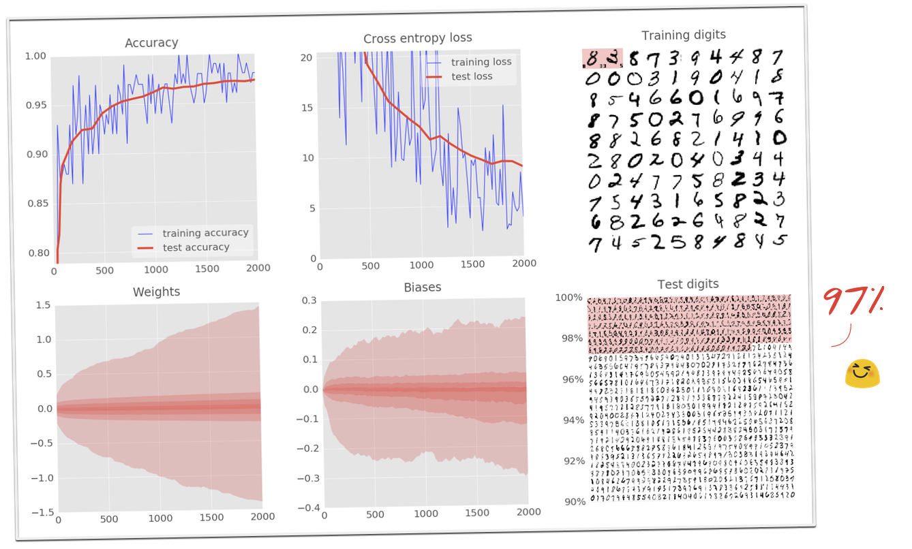

As layers were added, neural networks tended to converge with more difficulties. But we know today how to make them behave. Here are a couple of 1-line updates that will help if you see an accuracy curve like this:
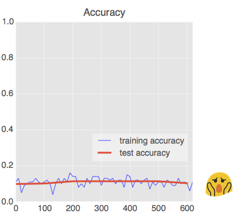
Relu activation function
The sigmoid activation function is actually quite problematic in deep networks. It squashes all values between 0 and 1 and when you do so repeatedly, neuron outputs and their gradients can vanish entirely. It was mentioned for historical reasons but modern networks use the RELU (Rectified Linear Unit) which looks like this:

A better optimizer
In very high dimensional spaces like here - we have in the order of 10K weights and biases - "saddle points" are frequent. These are points that are not local minima but where the gradient is nevertheless zero and the gradient descent optimizer stays stuck there. TensorFlow has a full array of available optimizers, including some that work with an amount of inertia and will safely sail past saddle points.
Random initialisations
Accuracy still stuck at 0.1 ? Have you initialised your weights with random values ? For biases, when working with RELUs, the best practice is to initialise them to small positive values so that neurons operate in the non-zero range of the RELU initially.
W = tf.Variable(tf.truncated_normal([K, L] ,stddev=0.1))
B = tf.Variable(tf.ones([L])/10)NaN ???
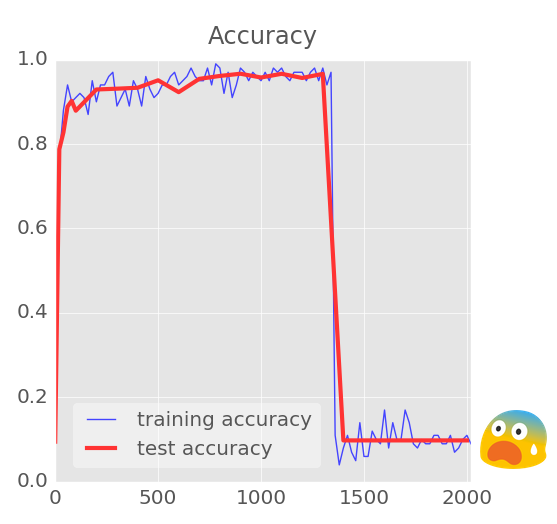
If you see your accuracy curve crashing and the console outputting NaN for the cross-entropy, don't panic, you are attempting to compute a log(0), which is indeed Not A Number (NaN). Remember that the cross-entropy involves a log, computed on the output of the softmax layer. Since softmax is essentially an exponential, which is never zero, we should be fine but with 32 bit precision floating-point operations, exp(-100) is already a genuine zero.
Fortunately, TensorFlow has a handy function that computes the softmax and the cross-entropy in a single step, implemented in a numerically stable way. To use it, you will need to isolate the raw weighted sum plus bias on your last layer, before softmax is applied ("logits" in neural network jargon).
If the last line of your model was:
Y = tf.nn.softmax(tf.matmul(Y4, W5) + B5)You need to replace it with:
Ylogits = tf.matmul(Y4, W5) + B5
Y = tf.nn.softmax(Ylogits)And now you can compute your cross-entropy in a safe way:
cross_entropy = tf.nn.softmax_cross_entropy_with_logits(Ylogits, Y_)Also add this line to bring the test and training cross-entropy to the same scale for display:
cross_entropy = tf.reduce_mean(cross_entropy)*100You are now ready to go deep.

With two, three or four intermediate layers, you can now get close to 98% accuracy, if you push the iterations to 5000 or beyond. But you will see that results are not very consistent.

These curves are really noisy and look at the test accuracy: it's jumping up and down by a whole percent. This means that even with a learning rate of 0.003, we are going too fast. But we cannot just divide the learning rate by ten or the training would take forever. The good solution is to start fast and decay the learning rate exponentially to 0.0001 for example.
The impact of this little change is spectacular. You see that most of the noise is gone and the test accuracy is now above 98% in a sustained way.

Look also at the training accuracy curve. It is now reaching 100% across several epochs (1 epoch = 500 iterations = trained on all training images once). For the first time, we are able to learn to recognise the training images perfectly.
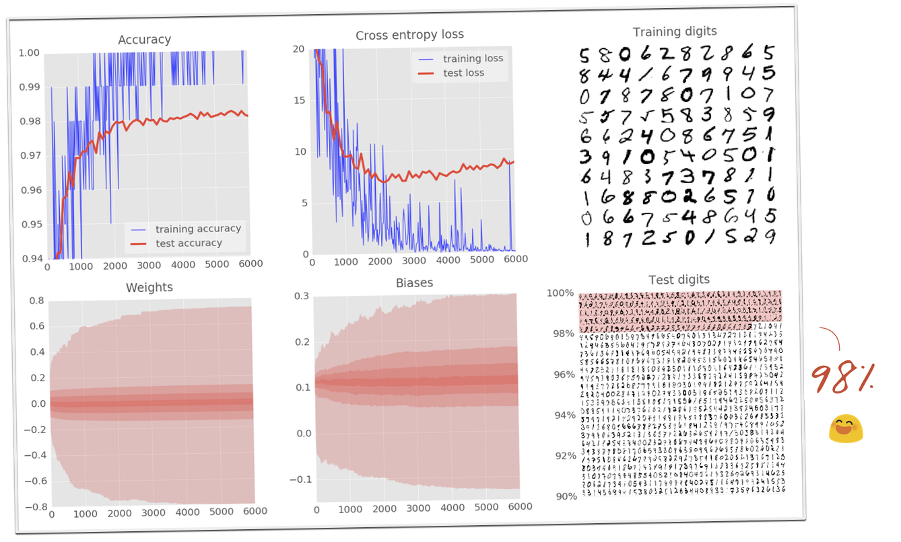

You will have noticed that cross-entropy curves for test and training data start disconnecting after a couple thousand iterations. The learning algorithm works on training data only and optimises the training cross-entropy accordingly. It never sees test data so it is not surprising that after a while its work no longer has an effect on the test cross-entropy which stops dropping and sometimes even bounces back up.

This does not immediately affect the real-world recognition capabilities of your model but it will prevent you from running many iterations and is generally a sign that the training is no longer having a positive effect. This disconnect is usually labeled "overfitting" and when you see it, you can try to apply a regularisation technique called "dropout".

In dropout, at each training iteration, you drop random neurons from the network. You choose a probability pkeep for a neuron to be kept, usually between 50% and 75%, and then at each iteration of the training loop, you randomly remove neurons with all their weights and biases. Different neurons will be dropped at each iteration (and you also need to boost the output of the remaining neurons in proportion to make sure activations on the next layer do not shift). When testing the performance of your network of course you put all the neurons back (pkeep=1).
TensorFlow offers a dropout function to be used on the outputs of a layer of neurons. It randomly zeroes-out some of the outputs and boosts the remaining ones by 1/pkeep. Here is how you use it in a 2-layer network:
# feed in 1 when testing, 0.75 when training
pkeep = tf.placeholder(tf.float32)
Y1 = tf.nn.relu(tf.matmul(X, W1) + B1)
Y1d = tf.nn.dropout(Y1, pkeep)
Y = tf.nn.softmax(tf.matmul(Y1d, W2) + B2)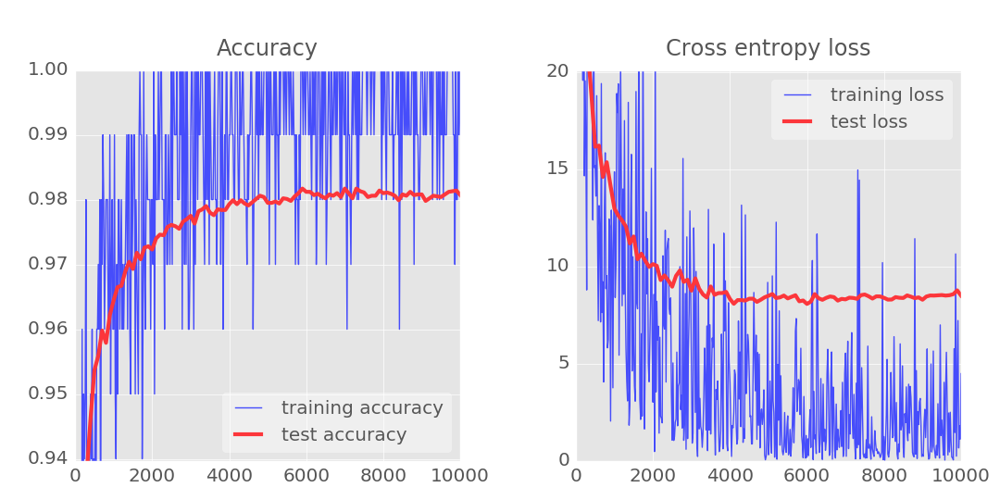
You should see that the test loss is largely brought back under control, noise reappears (unsurprisingly given how dropout works) but in this case at least, the test accuracy remains unchanged which is a little disappointing. There must be another reason for the "overfitting".
Before we continue, a recap of all the tools we have tried so far:
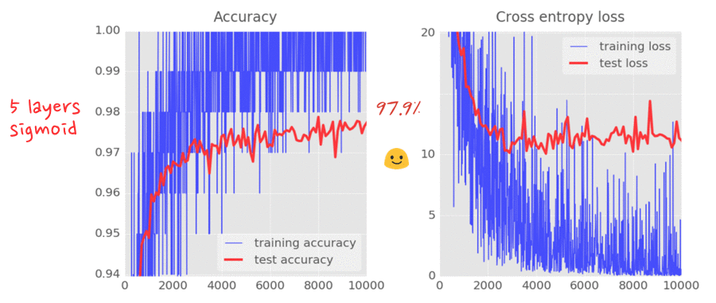
Whatever we do, we do not seem to be able to break the 98% barrier in a significant way and our loss curves still exhibit the "overfitting" disconnect. What is really "overfitting" ? Overfitting happens when a neural network learns "badly", in a way that works for the training examples but not so well on real-world data. There are regularisation techniques like dropout that can force it to learn in a better way but overfitting also has deeper roots.
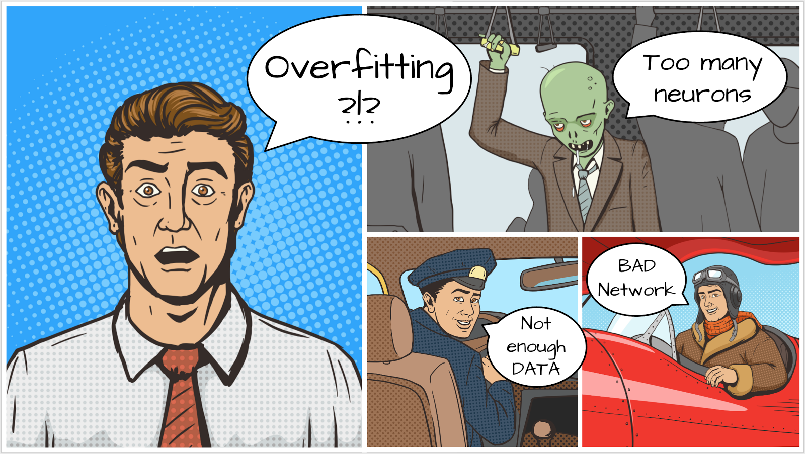
Basic overfitting happens when a neural network has too many degrees of freedom for the problem at hand. Imagine we have so many neurons that the network can store all of our training images in them and then recognise them by pattern matching. It would fail on real-world data completely. A neural network must be somewhat constrained so that it is forced to generalise what it learns during training.
If you have very little training data, even a small network can learn it by heart. Generally speaking, you always need lots of data to train neural networks.
Finally, if you have done everything well, experimented with different sizes of network to make sure its degrees of freedom are constrained, applied dropout, and trained on lots of data you might still be stuck at a performance level that nothing seems to be able to improve. This means that your neural network, in its present shape, is not capable of extracting more information from your data, as in our case here.
Remember how we are using our images, all pixels flattened into a single vector ? That was a really bad idea. Handwritten digits are made of shapes and we discarded the shape information when we flattened the pixels. However, there is a type of neural network that can take advantage of shape information: convolutional networks. Let us try them.

In a layer of a convolutional network, one "neuron" does a weighted sum of the pixels just above it, across a small region of the image only. It then acts normally by adding a bias and feeding the result through its activation function. The big difference is that each neuron reuses the same weights whereas in the fully-connected networks seen previously, each neuron had its own set of weights.
In the animation above, you can see that by sliding the patch of weights across the image in both directions (a convolution) you obtain as many output values as there were pixels in the image (some padding is necessary at the edges though).
To generate one plane of output values using a patch size of 4x4 and a color image as the input, as in the animation, we need 4x4x3=48 weights. That is not enough. To add more degrees of freedom, we repeat the same thing with a different set of weights.

The two (or more) sets of weights can be rewritten as one by adding a dimension to the tensor and this gives us the generic shape of the weights tensor for a convolutional layer. Since the number of input and output channels are parameters, we can start stacking and chaining convolutional layers.

One last issue remains. We still need to boil the information down. In the last layer, we still want only 10 neurons for our 10 classes of digits. Traditionally, this was done by a "max-pooling" layer. Even if there are simpler ways today, "max-pooling" helps understand intuitively how convolutional networks operate: if you assume that during training, our little patches of weights evolve into filters that recognise basic shapes (horizontal and vertical lines, curves, ...) then one way of boiling useful information down is to keep through the layers the outputs where a shape was recognised with the maximum intensity. In practice, in a max-pool layer neuron outputs are processed in groups of 2x2 and only the one max one retained.
There is a simpler way though: if you slide the patches across the image with a stride of 2 pixels instead of 1, you also obtain fewer output values. This approach has proven just as effective and today's convolutional networks use convolutional layers only.

Let us build a convolutional network for handwritten digit recognition. We will use three convolutional layers at the top, our traditional softmax readout layer at the bottom and connect them with one fully-connected layer:

Notice that the second and third convolutional layers have a stride of two which explains why they bring the number of output values down from 28x28 to 14x14 and then 7x7. The sizing of the layers is done so that the number of neurons goes down roughly by a factor of two at each layer: 28x28x14≈3000 → 14x14x8≈1500 → 7x7x12≈500 → 200. Jump to the next section for the implementation.
To switch our code to a convolutional model, we need to define appropriate weights tensors for the convolutional layers and then add the convolutional layers to the model.
We have seen that a convolutional layer requires a weights tensor of the following shape. Here is the TensorFlow syntax for their initialisation:
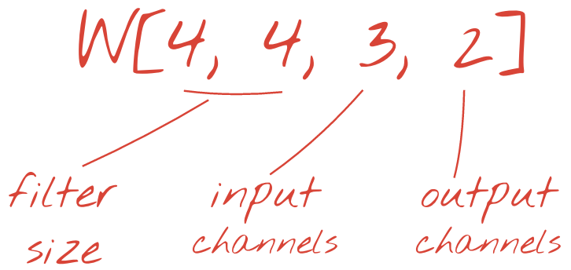
W = tf.Variable(tf.truncated_normal([4, 4, 3, 2], stddev=0.1))
B = tf.Variable(tf.ones([2])/10) # 2 is the number of output channelsConvolutional layers can be implemented in TensorFlow using the tf.nn.conv2d function which performs the scanning of the input image in both directions using the supplied weights. This is only the weighted sum part of the neuron. You still need to add a bias and feed the result through an activation function.
stride = 1 # output is still 28x28
Ycnv = tf.nn.conv2d(X, W, strides=[1, stride, stride, 1], padding='SAME')
Y = tf.nn.relu(Ycnv + B)Do not pay too much attention to the complex syntax for the stride. Look up the documentation for full details. The padding strategy that works here is to copy pixels from the sides of the image. All digits are on a uniform background so this just extends the background and should not add any unwanted shapes.
Your model should break the 98% barrier comfortably and end up just a hair under 99%. We cannot stop so close! Look at the test cross-entropy curve. Does a solution spring to your mind ?
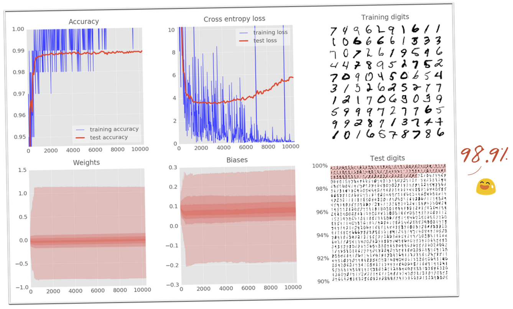
A good approach to sizing your neural networks is to implement a network that is a little too constrained, then give it a bit more degrees of freedom and add dropout to make sure it is not overfitting. This ends up with a fairly optimal network for your problem.
Here for example, we used only 4 patches in the first convolutional layer. If you accept that those patches of weights evolve during training into shape recognisers, you can intuitively see that this might not be enough for our problem. Handwritten digits are mode from more than 4 elemental shapes.
So let us bump up the patch sizes a little, increase the number of patches in our convolutional layers from 4, 8, 12 to 6, 12, 24 and then add dropout on the fully-connected layer. Why not on the convolutional layers? Their neurons reuse the same weights, so dropout, which effectively works by freezing some weights during one training iteration, would not work on them.

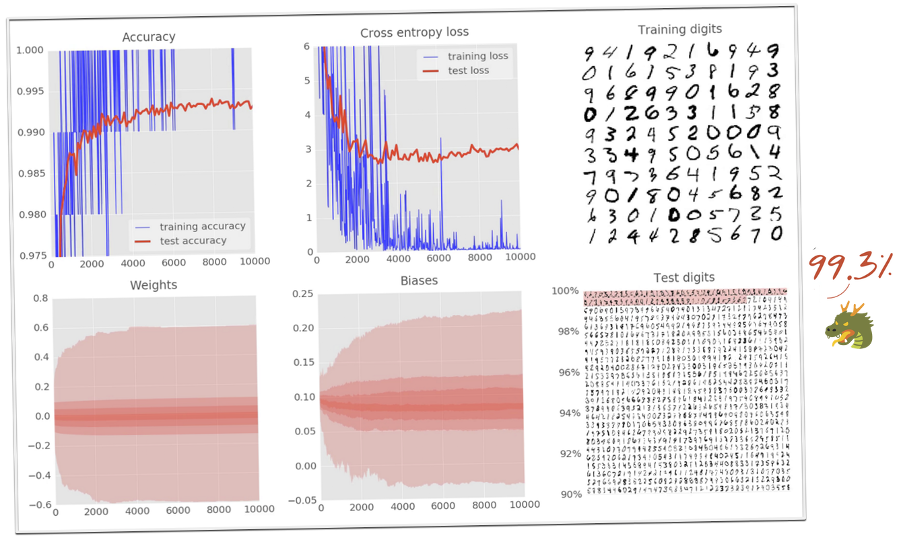
The model pictured above misses only 72 out of the 10,000 test digits. The world record, which you can find on the MNIST website is around 99.7%. We are only 0.4 percentage points away from it with our model built with 100 lines of Python / TensorFlow.
To finish, here is the difference dropout makes to our bigger convolutional network. Giving the neural network the additional degrees of freedom it needed bumped the final accuracy from 98.9% to 99.1%. Adding dropout not only tamed the test loss but also allowed us to sail safely above 99% and even reach 99.3%
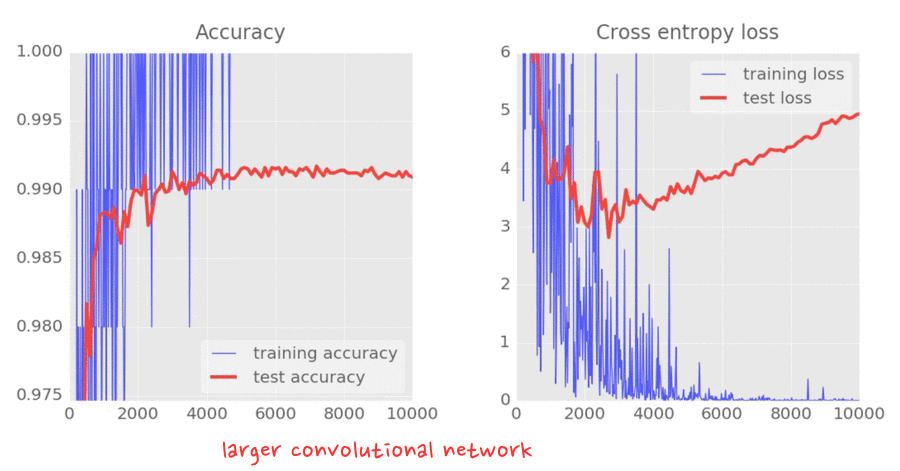
You have built your first neural network and trained it all the way to 99% accuracy. The techniques learned along the way are not specific to the MNIST dataset, actually they are very widely used when working with neural networks. As a parting gift, here is the "cliff's notes" card for the lab, in cartoon version. You can use it to recall what you have learned:
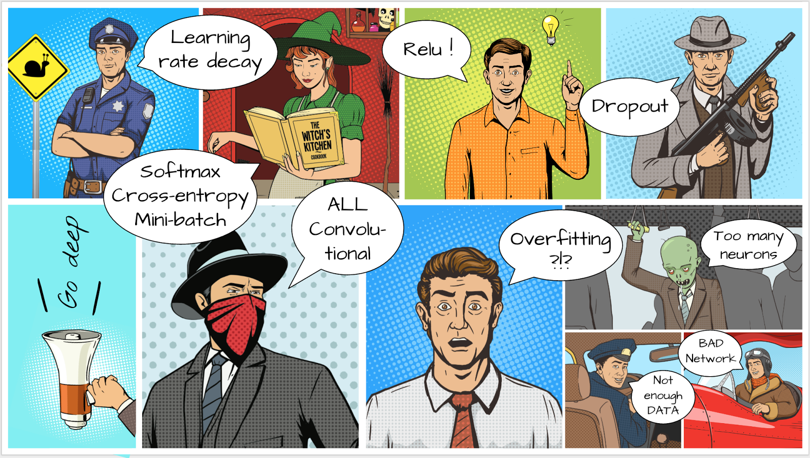
Next steps
- After fully-connected and convolutional networks, you should have a look at recurrent neural networks.
- In this tutorial, you have learned how to build a Tensorflow model at the matrix level. Tensorflow has higher-level APIs too called tf.learn.
- To run your training or inference in the cloud on a distributed infrastructure, we provide the Cloud ML service.
- Finally, we love feedback. Please tell us if you see something amiss in this lab or if you think it should be improved. We handle feedback through GitHub issues [feedback link].
|
All cartoon images in this lab copyright: alexpokusay / 123RF stock photos